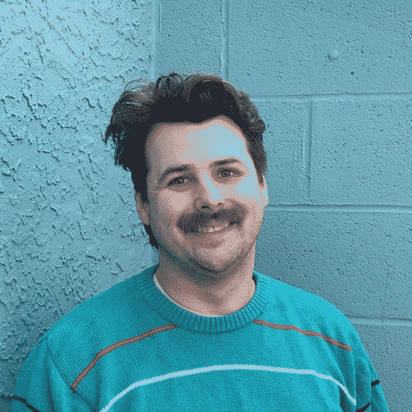

Last updated: Fri Mar 14 2025 | Permalink | RSS
Me smiling in a green sweater in front of a green block wall
I started a new role at CLS at the beginning of the year. My previous supervisor, Nate, moved on to work at a new workplace, and now I am the sole developer at CLS. In fact, I am now a Senior Developer & Data Analyst. It's certainly been an adjustment to be managing our projects, administering our case management system, and being my own project manager. But I am making it happen and have finally gotten into a groove.
I don't think I'll be comfortable with managing all these projects until summer (hopefully), but I have found the rhythm of the work. Juggling projects and having many different things to work on is fun for me and thrilling, for better or worse. The projects themselves are often exciting for the tech they use, the topics they address, or even just being a satisfying new way to interact with a tedious task. I've been busy but not overwhelmed.
I'm also adjusting to the Senior in the title too. It certainly fits the work I'm doing and all of the tasks I need to keep up with to make the work happen, but I'm not sure yet if it fits me. Only two years ago did I start to feel solidly in the "midlevel" category. But I have learned throughout my career that meeting the needs in the space is the work. A bike needs fixing. Data needs to be delivered to DHS. A spreadsheet has gotten too complicated and should be a database instead. They need to get done, so I need to make them happen. Regardless of my feelings about new words in my title.
Over the last ten weeks, I have felt myself leveling up and it feels fantastic. Already I was grateful to have a job where I get to work on cool projects that help Philadelphians, or at least help our caseworkers help Philadelphians. Five days a week I get to do meaningful and autonomous work. A dreamy state for a worker. None of this is to gloat, rather to express gratitude and reflect on how I'm growing as a developer. I am genuinely enjoying this job and especially the work I get to do.